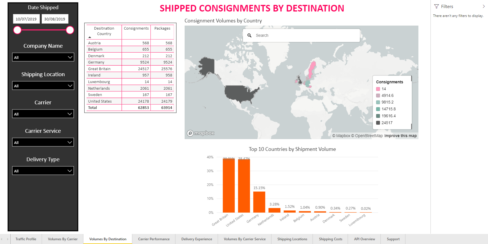
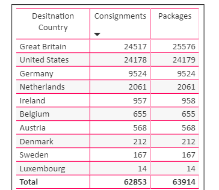
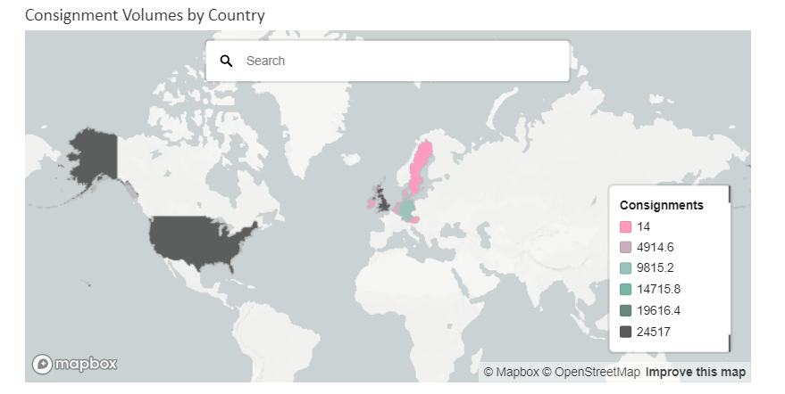
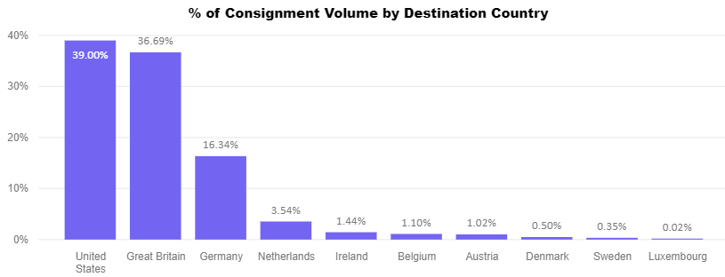

Shipped Consignments by Destination Country
The Shipped Consignments by Destination Country report enables you to see how many consignments you have sent to each of your destination countries. It comprises a table listing consignment and package data, a Consignment Volumes By Country chart with the shipment data plotted on a map, and a % of Consignment Volume by Destination Country bar chart.
Note:
In order for the data in this chart to be accurate, your consignments must have a destination country correctly recorded. Specifically, they must have a valid
Addressobject that has anAddressTypeofDestinationand the relevant two-letter country code in theAddress.Country.IsoCode.TwoLetterCodefield.For more information on recording consignment data in PRO, see the Create Consignment page of the API reference.
Report Filters
The Shipped Consignments by Destination Country report offers the following report-wide filters:
- Date Shipped - enables you to select only those consignments that were shipped within a given date range.
- Company Name - where applicable, enables you to select only those consignments that were shipped by a particular company within your group. You can select multiple companies if required.
- Shipping Location - where applicable, enables you to select only those consignments that were shipped from a particular shipping location.
- Carrier - enables you to select only those consignments that were shipped via a particular carrier.
- Carrier Service - enables you to select only those consignments that were shipped via a particular carrier service.
- Delivery Type - enables you to select only those consignments that were shipped as a particular delivery type (i.e. Delivery or Click and Collect).
Data Table
The data table shows how many consignments and packages were shipped to each of your destination countries (with any report filters taken into account:
Visualisation Filters
More Options
The data table has the following options available from its More Options menu:
- Open Comments
- Export Data
- Show Data
- Spotlight
- Sort Descending
- Sort Ascending
- Sort by Destination Country / Consignments / Packages
Consignment Volumes by Country
The Consignment Volumes by Country chart displays the countries your organisation has shipped to on a map. The countries you ship to most frequently are displayed in blue, while your least frequently shipped-to countries are displayed in green.
If required, you can search for countries and locations using the search bar at the top of the panel.
Visualisation Filters
More Options
The Consignment Volumes by Country chart has the following options available from its More Options menu:
% of Consignment Volume by Destination Country
The % of Consignment Volume by Destination Country bar chart shows each destination country's share of your total shipments. Click on a bar to view the corresponding country on the Consignment Volumes by Country map.
Visualisation Filters
- %GT Count of ConsignmentReference (Numerical)
More Options
The % of Consignment Volume by Destination Country chart has the following options available from its More Options menu:
- Open Comments
- Export Data
- Show Data
- Spotlight
- Sort Descending
- Sort Ascending
- Sort by Country / %GT Count of ConsignmentReference